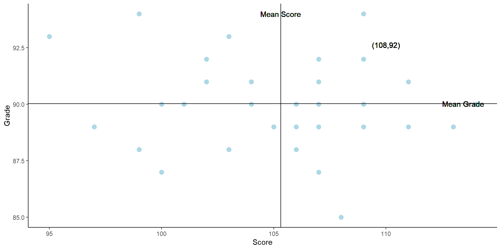
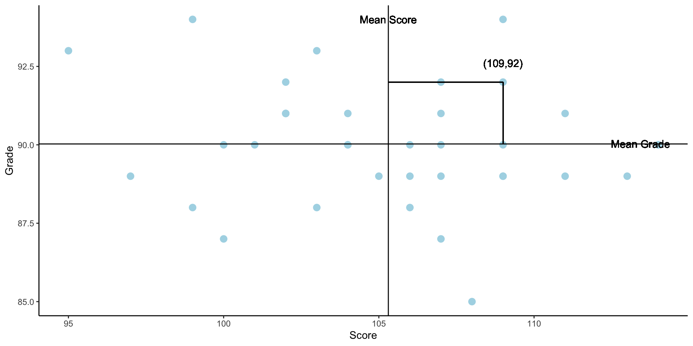
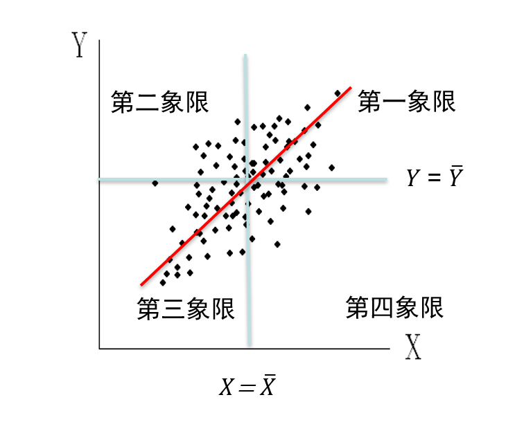
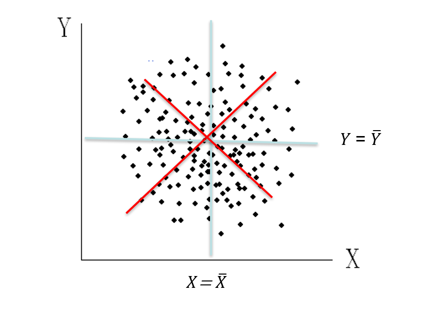
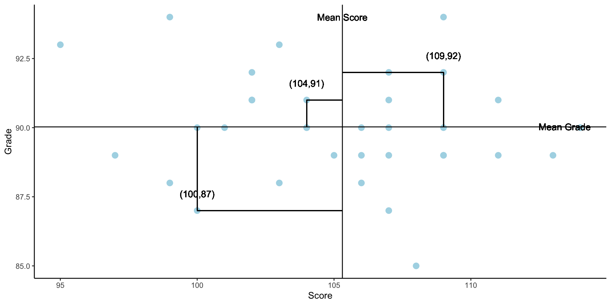
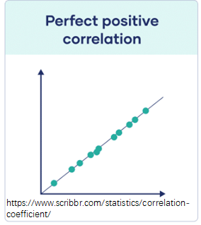
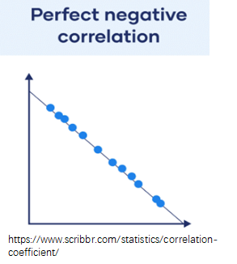
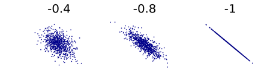
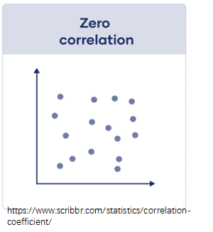
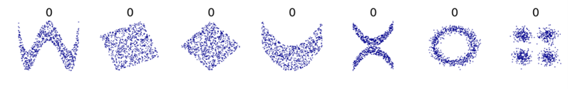

13 - 相关分析
(Correlation analysis 3)
Hu Chuan-Peng
2023-05-24
Review
假设检验;
p值;
两类错误
相关分析
在南京某创造力培训班的招生宣讲会现场，有家长询问创造力培训是否可以促进孩子的学习成绩，该培训班的招生负责人展示了一组数据。请问该家长能否从这组数据中发现创造力分数与孩子学习成绩的关系。
相关分析
相关性是指两个随机变量之间的任何统计关系，无论是否有因果关系；
考察两组观测值之间联系的强度，联系的强度是指两组观测值在多大程度上是“一起变化”的
量化”一起变化”
我们先从单个点(108,92)开始，其中Mean Score可以用\(\bar{X}\),Mean Grade可以用\(\bar{Y}\)表示
点(108,92)到\(\bar{X}\),\(\bar{Y}\)的距离可以分别表示为\(X-\bar{X}\),\(Y-\bar{Y}\),它们分别代表X和Y的离均差，对于单个点，我们可以用\((X-\bar{X})*(Y-\bar{Y})\)量化单个点的变化程度
对于所有点，我们用离差积和(Sum of product)\(\sum(X-\bar{X})*(Y-\bar{Y})\)来进行表示。

离差积和(Sum of product)\(\sum(X-\bar{X})*(Y-\bar{Y})\)在相当程度反映两个变量共同变化的程度
当\(\sum(X-\bar{X})*(Y-\bar{Y})>0时\)
当\(\sum(X-\bar{X})*(Y-\bar{Y})<0时\)

当\(\sum(X-\bar{X})*(Y-\bar{Y})接近0时\)
离差积和的一个问题在于，样本越多，该值越大，为了消除样本容量大小的影响，我们使用协方差(Covariance)进行表示
\[\frac{\sum(X-\bar{X})*(Y-\bar{Y})}{n}\]
协方差的一个问题在于，由于变量测量单位不一致，不具有可比性。
\[\frac{\sum(X-\bar{X})*(Y-\bar{Y})}{n}\]

我们将两变量各自除以各自的标准差，以保持量纲一致
\[r = \frac{\sum(X-\bar{X})*(Y-\bar{Y})}{n*s_{X}*s_{Y}}\]
\[=\frac{1}{n}*\sum\frac{(X-\bar{X})}{s_{X}}*\frac{(Y-\bar{Y})}{s_{Y}}\]
\[=\sum\frac{Z_X*Z_Y}{N}(样本)\]
\[\rho = \frac{\sum(X-\bar{X})*(Y-\bar{Y})}{n*\sigma_{X}*\sigma_{Y}}\]
\[=\frac{1}{n}*\sum\frac{(X-\bar{X})}{\sigma_{X}}*\frac{(Y-\bar{Y})}{\sigma_{Y}}\]
\[=\sum\frac{Z_X*Z_Y}{N}(总体)\]
我们可以从另一个角度来理解r,\(\sum(X-\bar{X})*(Y-\bar{Y})\)表示X与Y共同变化的程度，\(s_x*s_y\)表示X与Y单独变化的程度
\[r = \frac{\sum(X-\bar{X})*(Y-\bar{Y})}{n*s_{X}*s_{Y}}=\frac{\sum(X-\bar{X})*(Y-\bar{Y})}{\sqrt{(X-\bar{X})^2}*\sqrt{(Y-\bar{Y})^2}}\]
相关系数(Correlation coefficient)
一个介于-1和1之间的数字，表示变量之间关系的强度和方向；
反映变量之间相关关系密切程度的指标。
一般样本的相关系数用\(r\)表示，总体的相关系数用\(\rho\)表示。
相关系数的取值： \(-1 ≤ r ≤ 1\);
相关系数 \(r = 1\)表示完全正相关,\(r = -1\)表示完全负相关，\(r = 0\)表示完全独立，零相关或无相关;
相关系数不是由相等单位度量而来的，因此只能比较大小，不能做任何加、减、乘、除运算。;
正相关(Positive correlation)
两个变量在数值上的变化方向一致，一个变量由大而小变化，另一个变量由大而小变化。


负相关(Negative correlation)
两个变量在数值上的变化方向相反，一个变量由大而小变化，另一个变量却由小而大变化。


零相关(Naught/zero correlation)
两个变量之间的关系零散，无法找到联系，各现象间表现为互相独立。


相关系数的大小
| Correlation coefficient | Correlation strength | Correlation type |
|---|---|---|
| \(-1 \sim -0.70\) | Very strong | Negative |
| \(-0.50 \sim -0.69\) | strong | Negative |
| \(-0.30 \sim -0.49\) | Moderate | Negative |
| \(\sim -0.29\) | Weak | Negative |
| 0 | None | Zero |
| \(\sim 0.29\) | weak | Positive |
| \(0.30 \sim 0.49\) | Moderate | Positive |
| \(0.50 \sim 0.69\) | strong | Positive |
| \(0.70 \sim 1\) | Very strong | Positive |
在使用相关系数的时候需要注意什么
相关系数是一个描述性统计，它总结了样本数据，但并不能进一步推断出关于总体的信息；
相关分析受样本影响，小样本的相关系数不稳定；
相关系数是一个效果大小的衡量标准，它告诉你一个结果的实际意义。相关系数是无单位的，这使得我们可以直接比较研究之间的系数。
常见的相关系数
相关分析的历史

高尔顿的学生皮尔逊为了研究人类的遗传，采集了大量来自父亲和儿子身高的数据
x轴为父亲的身高(单位：英尺)
y轴为儿子的身高(单位：英尺)
皮尔逊积差相关(Pearson’s product-moment coefficient)
前一节中介绍的相关系数就是皮尔逊相关系数；
皮尔逊积差相关描述两个连续变量之间的线性相关。
皮尔逊积差相关的适用条件
成对的数据；
数据均来自正态分布的总体；
数据是等距、连续的；
两列变量之间的关系是线性的；
样本容量不宜太小，成对数据的数目至少不少于30对，否则缺乏代表性。
斯皮尔曼等级相关(Spearman’s rank correlation coefficient)
斯皮尔曼等级相关是一个等级相关系数；
因为它使用每个变量的数据排名（例如，从最低到最高）而不是原始数据本身。
斯皮尔曼等级相关的适用条件
两列具有等级变量性质的数据，主要解决称名和顺序数据的相关问题；
两列变量具有线性关系；
对总体分布状态不做要求；
等比和等距数据需要进行赋以等级顺序，才能处理。
斯皮尔曼等级相关的计算
- 等级差数法：
\[r_R = 1-\frac{6\sum(R_X-R_Y)^2}{N(N^2-1)}=1-\frac{6\sum D^2}{N(N^2-1)}\]
- 等级序数法
\[r_R = \frac{3}{N-1}*[\frac{4\sum R_XR_Y}{N(N+1)}-(N+1)]\] - N为等级个数；
D指二列成对变量的等级差数；
\(R_X\)与\(R_Y\)为两列变量各自排列的等级次数
有相同等级时计算等级相关的方法:如果有相同等级时,可用它们所占等级位置的平均数作为它们的等级
\[r_RC = \frac{\sum x^2+\sum y^2-\sum D^2}{2 \sqrt{\sum x^2} \sqrt{\sum y^2}}\] \[\sum x^2 = \frac{N^3-N}{12}-\sum C_X, \sum C_X = \sum \frac{n(n^2-1)}{12}\] \[\sum Y^2 = \frac{N^3-N}{12}-\sum C_Y, \sum C_Y = \sum \frac{n(n^2-1)}{12}\]
肯德尔等级相关
多列变量间的等级相关系数;
计算肯德尔和谐系数，原始数据资料的获得一般采用等级评定法，即让K个被试（或称为评价者）对N件事物或N种作品进行等级评定，每个评价者都能对N件事物（或作品）的好坏、优劣、喜好、大小、高低等排出一个等级顺序;
W系数是每一评价对象实际得到的等级总和的变异与被评价对象一致性程度最大时等级总和的变异的比值。
肯德尔等级相关的计算
\[W = \frac{12(\sum R^2_i-\frac{(R_i)^2}{N})}{k^2(N^3-N)}\]
\(R_i\) : 第i个评价对象在所有k个评价者所获评级之和;
N :评价对象的数量;
k :评价者数量
Kendall U
肯德尔U系数又称一致性系数，适用于对K个评价者的一致性进行统计分析;
它与肯德尔W系数所处理的问题相同，但所处理的资料的获得方法不同，计算结果也不同;
如果有N件事物，由K个评价者，将N件事物两两配对，形成了N(N-1)/2对，然后对每一对中两事物进行比较，优者记1，非优者记0。
Kendall U 的计算
$$
Summary